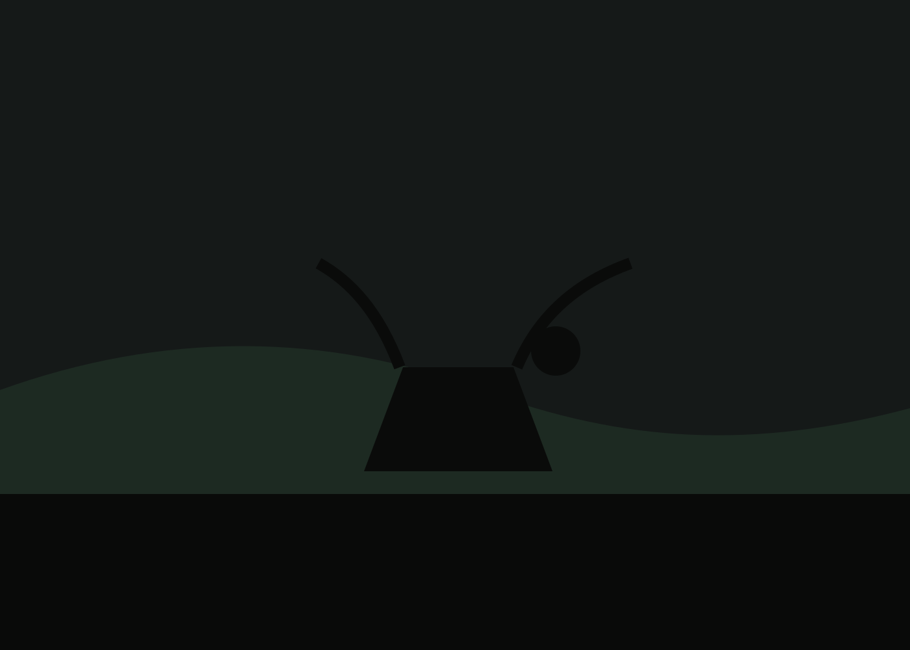

Collections
Five gallery pages are included, each with responsive grids, full-resolution links, print placeholders, panorama handling, and a zoomable full-screen lightbox.

Mountains
Alpine basins, high passes, ridgelines, and snow.

Forests
Canopy studies, mist, trunks, and filtered light.

Coastlines
Sea stacks, tide pools, cliffs, and weathered rock.

Wildlife
Quiet encounters, open habitat, and patient distance.

Panoramas
Ultra-wide compositions designed to hold their scale.